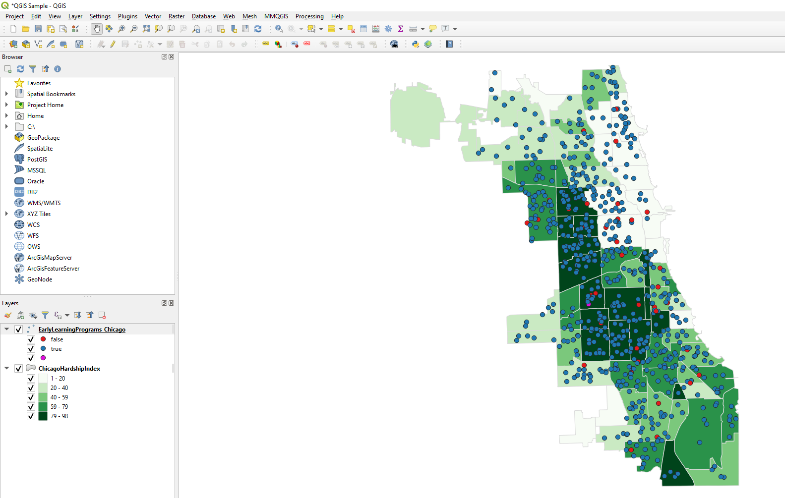
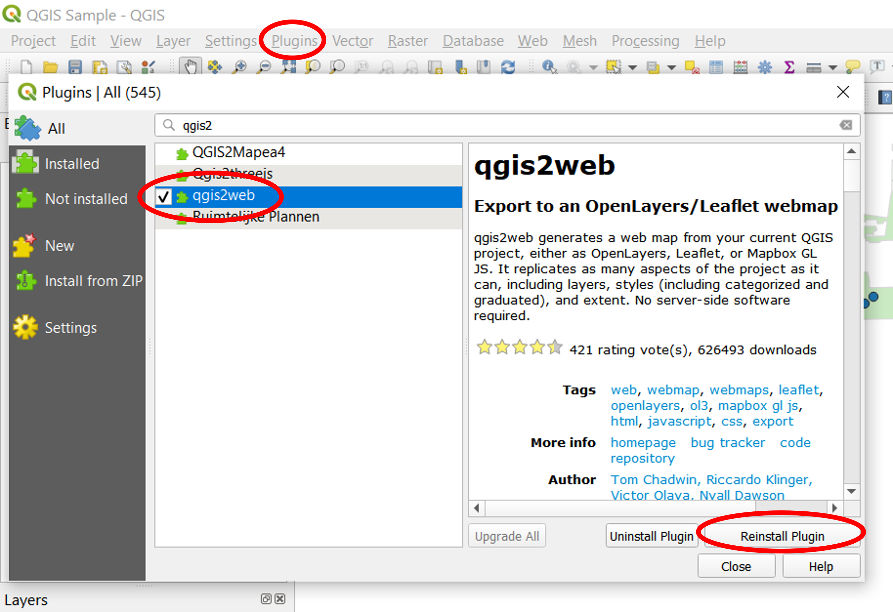
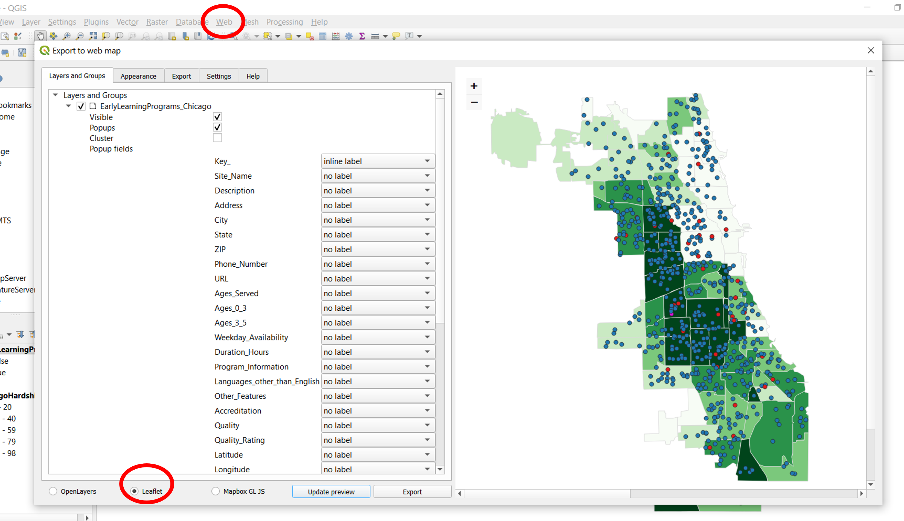
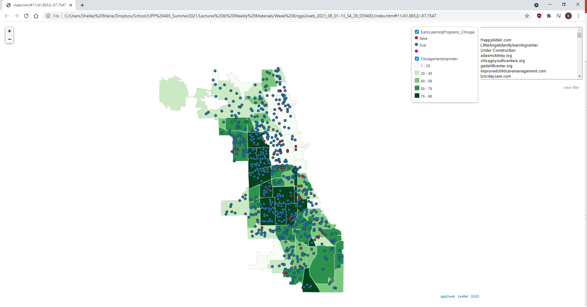

Other Web Mapping Tools
There are approximately 7002140912850912059 services available that offer basic online thematic mapping & data analysis
Most of them provide basic services for free, and additional functionality at a cost.
Some companies that provide either basic web mapping, data manipulation, or statistical analysis
Some provide more robust data manipulation, but weaker visualization. Some better statistical analysis but no data hosting, etc.
You can do a lot more spatial work with ArcGIS/QGIS, but it generally requires more work on the backend.
Your future workplace may prioritize ease over robustness.
A much easier way to make a leaflet map
Step 1: Download QGIS
Step 2: Add layers and style your map as you would in ArcMap
Step 3: Add qgis2web plugin
Step 4: Go to: Web > qgis2web, select your options, and update!
Now you have a leaflet map :)
Thanks for a great class everyone!
Questions?